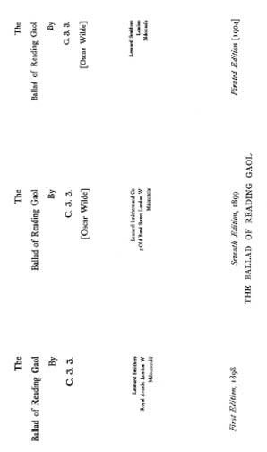

The Athenæum’da 12 Şubat 1898 Cumartesi günü şu reklam bir sayfanın çeyreğini kaplayacak şekilde yayımlanmıştı:
13 Şubat’ta yayımlanacaktır
***
READING ZİNDANI BALADI
C.3.3.
imzasıyla
***
Baskı 800 adettir, el yapımı kâğıda basılmış, cildi beyaz ve tarçın rengidir,
30 nüsha da Japon parşömenine basılmıştır.
***
Fiyatı: 2 şilin 6 peni
Japon parşömenine baskının fiyatı: 20 şilin
***
LEONARD SMITHERS,
Old Bond Caddesi, Royal Arcade, No: 4-5,
Smithers 14 Şubat Pazartesi günü kayıt yaptırmak için Stationers’ Hall’a gitmiş ve yayımlanma tarihini 13 Şubat olarak belirtmiştir.
Sayfa 76’te bulunan el yazmaları1 dört bendin ilki Dördüncü Bölümün son bendidir, ikincisi ve üçüncüsü Beşinci Bölümün ilk iki bendidir ve sonuncusu bütün olarak metinden çıkarılmış, ancak Balad’ın diğer kısımlarında kullanılmıştır. Çıkarılan kısım şöyledir:

With front of brass and feet of lead
We tramp the prison yard.
We tramp the slippery asphalte ring
With soul and body marred,
And each man’s brain grows sick with hate,
And each man’s heart grows hard,
Reading Zindanı Baladı’nın yazımına Fransa’da Dieppe yakınlarındaki Berneval’in Chalet Bourgeat beldesinde 1897 yazında başlanmıştır.
Wilde bu dönemdeki mektuplarında şiirinden sık sık bahsetmektedir ve ilk bahis 19 Temmuz’da Smithers’a yazdığı mektupta olmuştur:
Hala şiirim üzerinde çalışıyorum! Şiir zor bir sanat, ama şimdiye kadar yaptıklarımın çoğunu beğendim.
4 Ağustos’ta da şöyle yazmıştır:
Bir gün yayımlamaya değecek kadar seveceğiniz bir iş çıkaracağımı ümit ediyorum.
24 Ağustos’ta işe şunları yazmıştır:
Size gönderdiğim Şiir’i daktiloda yazdırıp Cumartesi günü bana getirebilirseniz çok büyük bir iyilik yapmış olacaksınız. Gelemezseniz de Dieppe’teki Hotel Sandwich’e, Sebastian Melmoth adına posta ile gönderiniz. İnce kâğıda değil, kaliteli kâğıda yazılmasını istiyorum,2 kapağını da kahverengi kartondan yapın. Yazmayı henüz bitirmedim, ama daktiloda yazılmışını görmek istiyorum. Kendi el yazımdan sıkıldım artık. 3
Smithers ise şöyle cevap vermiştir:
Old Bond Caddesi
Royal Arcade, No: 4-5
Londra
2 Eylül 1897
Oscar Wilde Bey’e,
Sevgili Wilde,
Şiirinizi dün gönderdim. Aubrey’e de gösterdim ve çok etkilendi. İlk sayfa için hemen bir resim hazırlamaya söz verdi, ama öyle bir şekilde söyledi ki hiçbir şey yapmayacağına kanaat getirdim. Zaten “Matmazel Maupin” muhabbetlerinden sıkılmış durumda ve sadece “Casanova”dan bahsediyor. Ona herhangi bir şekilde, herhangi bir iş yaptırmak mümkün değil.
Conder’la en son Salı günü görüştüm ve ayrıldığımızda epeyce kötü bir haldeydi. Çünkü Salı sabahı kendisine küçük bir çek geldi, biz de tüm Salı gününü çeki bozdurup parayı harcamaya ayırdık. Şimdi Sandwich Bar’a dağlar kadar borcu var.
Bacağım çok ağrıyor ve yürümek çok zor hale geldi. Bu yüzden Rouen’daki randevumuzu bir hafta ertelememiz gerekiyor.
Müsait olduğunuzda bana şiirin ya daktiloda yazılmış halini, ya da el yazmalarını gönderin, ben de size taslak baskıyı göndereyim.
Saygılarımla,
LEONARD SMITHERS.
Wilde Ekim ayında Napoli’de bulunuyordu. Burada beşinci ve altıncı bölümleri yazdı. Ama paraya da ihtiyacı vardı. Yayımcısına gönderdiği mektupta şöyle diyordu: 4
Cook’tan hala haber alamadım, ama sizden istediğim şeyi yapmış olduğunuzdan eminim. Sizden öylesine bir borç istemiyorum, sadece yayımlamak üzere olduğunuz şiirim için biraz avans istiyorum. Dieppe’te bulunduğum sırada kitap işi için ne tür şartlarım olduğunu sorduğunuzda meseleyi tamamen sizin takdirinize bırakmaya hazır olduğumu söylemiştim. Siz de tüm kârı bana vereceğinizi söylemiştiniz… Bu teklif de Café des Tribunaux’daki akşam yemeğinden sonra değil, önce yapılmıştı. Ben de bunu hiç de adil olmadığı için kabul edemeyeceğimi ve kârın yarısını alacağımı söylemiştim. Bu şekilde anlaşmıştık.
O zamanlar şiiri önce bir gazetede tefrika etmeyi teklif etmiştim, ama aradan geçen sürede bundan vazgeçtim. Vaktinden evvel tanınır olmak satışlarınızı elbette kötü etkilerdi. Zaten insanlar da bir peniye alabilecekleri bir şey için mücevherlerini bozduracak değiller. Niye, bilmiyorum. Ama bu her yerde böyledir, belki Napoli hariç… Neyse, … sonrasında şiirin bekareti sizindir. … Bana kalırsa sizden 20 pound avans isteyerek çok da büyük bir talepte bulunmuyorum.
Eğer şiirim için 20 pound’luk bir avans istemenin ticari açıdan hakikaten yapmaya hakkım olan bir şey olduğu fikrini edinmediyseniz, bir an önce edinmenizi dilerim.
Size kişisel borç için de muhtemelen ileride başvuracağım, hatta bana kalırsa böyle bir şey mutlaka olacaktır. Ama şimdiye kadar ilişkimiz sadece şair ve yayımcı arasındaki sıradan bir ilişkiden ibaret oldu ve bundan kazançlı çıkan da genellikle yayımcı tarafı oldu. … Bugün size ayrıca şiirimden gayet tesirli, romantik-realist karışımı dört bent daha gönderiyorum, bu da benim cömert tabiatımın bir göstergesidir. Toplamda yirmi dört mısra var,5 bunların her biri şiire değer verilen yerlerde 20 şilin eder. Bunları lütfen … İkinci Bölüme, “had such a sin to pay” diye biten altıncı bendin sonrasına gelecek şekilde ekler misiniz? Çünkü bu dört bent o kısımda mükemmel duruyor ve diğerlerine nazaran kısa duran İkinci Bölümü geliştirmiş oluyor.
Bir de, şiirin tasvirler eklenmiş ikinci bir edisyonunun yapılması konusunda bana çoktan yazmış olduğunuzu umuyorum…
1 El yazmalarının tamamının nerede olduğu bilinmemektedir. Üçüncü Bölümün bulunduğu dört sayfalık bir folyo 8 Aralık 1909’da New York’taki bir açık artırmada 100 dolara satıldı. – [S.M.]
2 24 Mayıs 1898’de yayımcıya yazdığı ve bir oyunun daktilo ile yazılmasını istediği mektubunda şunları söylemiştir: “ince kâğıda değil, kalın ve kaliteli kâğıda yazın. İnce kâğıtlarda düzeltme yapamıyorum. Hem ince kâğıtları da israf etmemek gerekir. Yani doktorlar böyle diyor en azından… Bana Paris’e gelmekten vazgeçtiğinizi söyleyin ki gelişiniz sürpriz olsun.” – [S.M.]
3 Glaenzer satış kataloğu, New York, 1911,
4 2 Ekim 1897 tarihli bu mektup, Richard Butler Glaenzer tarafından The Bookman’da (New York, Haziran 1911, sayfa 380) iktibas edilmiştir. New York’ta 28 Kasım 1911’de çıkan Glaenzer satış kataloğunda ise tarih 9 Ekim olarak verilmiştir. – [S.M.]
5 “The oak and elm have pleasant leaves” diye başlayan ve “For none can tell to what red Hell / His sightless soul may stray.” mısralarıyla biten bölüm.